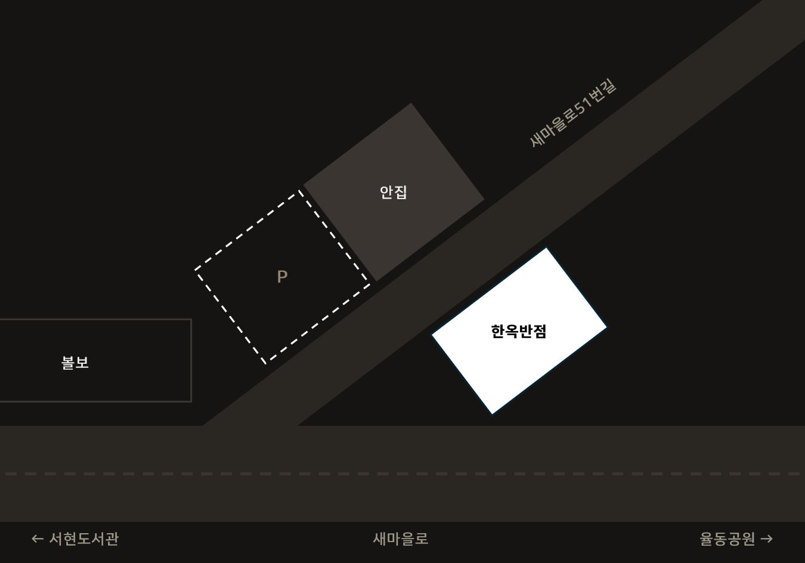

오시는 길
서현동과 율동공원을 잇는 새마을로 골목 초입에 위치하고 있습니다.

약도는 실제 축척과 다를 수 있습니다.
주차
주차장은 맞은편 음식점 '안집'과 함께 사용하고 있습니다.
골목 초입이라 혼잡한 구간이므로 주차 관리요원의 안내에 따라 주세요.
발렛 및 주차장 이용 요금은 한 대당 1,000원입니다.
이용 안내
대중교통
- 버스 — 통로골 또는 서현중학교 정류장
- 지하철 — 수인분당선 서현역
서현동과 율동공원을 잇는 새마을로 골목 초입에 위치하고 있습니다.

약도는 실제 축척과 다를 수 있습니다.
주차장은 맞은편 음식점 '안집'과 함께 사용하고 있습니다.
골목 초입이라 혼잡한 구간이므로 주차 관리요원의 안내에 따라 주세요.
발렛 및 주차장 이용 요금은 한 대당 1,000원입니다.